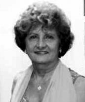

<style>
section {
        display: flex;
        flex-direction: row;
        align-items: center;
        justify-content: center;
        gap: 40px;
        margin: 40px 0;
    }


    .conteudo {
        max-width: 1000px;
        font-family: Arial, sans-serif;
        font-size: 16px;
        line-height: 1.6;
        color: #333;
        text-align: justify;
    }

    .conteudo p {
        
        margin-bottom: 16px;
    }
    img {
        width: 300px;
        height: auto;
        border-radius: 8px;
    }
</style>
<section>

    <div class="conteudo">

        <h2>ISABEL DIAS NEVES (BELINHA)</h2>
        
        <p>Nascida em 31 de outubro de 1935, na cidade de Tocantinópolis, Tocantins, Isabel Dias Neves, conhecida como Belinha, é filha de Luiz Neves e Marcelina Dias Neves. Passou a infância e adolescência em sua terra natal, onde iniciou seus estudos no Grupo Escolar Nero Macedo. Posteriormente, mudou-se para Porto Nacional, cursando o Ginásio Nossa Senhora das Mercês, e concluiu o curso normal no Colégio Santa Clara, em Goiânia. Formou-se em Pedagogia pela Universidade Católica de Goiás e fez mestrado em Educação pela Pontifícia Universidade Católica do Rio de Janeiro (PUC-RJ). Belinha teve destacada atuação como professora nas universidades UFG (Universidade Federal de Goiás) e Universidade Católica de Goiás, formando gerações de educadores. Também se notabilizou como escritora, poetisa, cronista, contista, pesquisadora e ensaísta. Sua obra transita entre a ficção, a memória e o pensamento educacional. É autora dos livros:</p>
        <ul>
            <li>"Fardo Florido" (poemas, 1995)</li>
            <li>"Rasas Raízes" (contos)</li>
        </ul>
        <p>Participa de diversas antologias e dicionários literários, como:</p>
        <ul>
            <li>Goiás - Meio Século de Poesia, de Gabriel Nascente</li>
            <li>Dicionário de Escritoras Brasileiras, de Nelly Novaes Coelho</li>
            <li>Dicionário Biobibliográfico do Tocantins, de Mário Ribeiro Martins</li>
        </ul>
        <p>Foi membro da União Brasileira de Escritores de Goiás, da Associação dos Docentes da UFG, além de outras entidades culturais. Fez viagens culturais por diversos países da Europa, enriquecendo sua vivência intelectual. Tomou posse na Academia Tocantinense de Letras no dia 25 de abril de 1998, em sua cidade natal, ocupando a Cadeira 34, cujo patrono é Manoel de Souza Lima. Em 2004, foi eleita presidente da Academia, em substituição a Juarez Moreira Filho. Após viver em Goiânia por décadas, retornou a Palmas, onde seguiu com suas atividades literárias e culturais. Foi casada com o também acadêmico e engenheiro Francisco Mendonça, de quem se separou. Belinha é referência na literatura tocantinense e goiana, sendo um dos nomes mais respeitados da educação e das letras da região.</p>
        
        
    </div>
    <div class="imagem">
        
        
        </div>

    

    


</section>